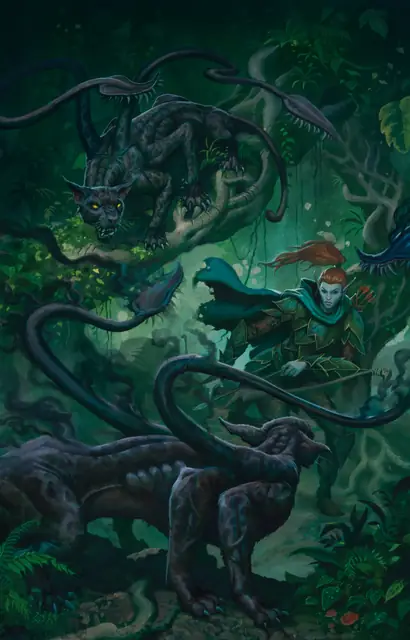

Ускользающий зверь
Displacer Beast
Большое Чудовище, Принципиальное Злое

Класс Защиты 13 Инициатива +4 (14)
Хиты 76 (9к10 + 27)
Скорость 40 футов
| мод | спас | ||
|---|---|---|---|
| СИЛ | 18 | +4 | +4 |
| ЛОВ | 15 | +2 | +2 |
| ТЕЛ | 16 | +3 | +3 |
| мод | спас | ||
|---|---|---|---|
| ИНТ | 6 | −2 | −2 |
| МДР | 12 | +1 | +1 |
| ХАР | 8 | −1 | −1 |
Чувства Тёмное зрение 60 футов, пассивное Восприятие 11
Языки понимает Сильван, но не говорит
Опасность 3 (700 опыта; БВ +2)
Особенности
Избегание. Если ускользающий зверь подвергается эффекту, позволяющему совершить спасбросок, чтобы получить только половину урона, то вместо этого он вообще не получает никакого урона, если преуспевает в спасброске, и только половину, если проваливает его. Он не может пользоваться этой особенностью, если имеет состояние Недееспособный.
Ускользание. Броски атаки против ускользающего зверя совершаются с Помехой, поскольку он проецирует иллюзию, из-за которой кажется, что он находится немного в стороне. Эта особенность не работает, пока ускользающий зверь имеет состояние Недееспособный.
Действия
Мультиатака. Ускользающий зверь совершает одну атаку Раздиранием и одну атаку Щупальцем.
Раздирание. Бросок рукопашной атаки: +6, досягаемость 5 фт. Попадание: 9 (1к10 + 4) Рубящего урона. Если цель Большого размера или меньше, она становится Опрокинутой.
Щупальце. Бросок рукопашной атаки: +6, досягаемость 10 фт. Попадание: 11 (2к6 + 4) Колющего урона.
Бонус мастерства +2
Среда обитания Леса
Сокровища Отсутствуют
Ускользающий зверь
Обманчивый хищный кот
Ускользающий зверь напоминает худую шестиногую пантеру, у которой из каждого плеча растёт зазубренное щупальце. Этот хищник пользуется врождённой магией, чтобы преломлять свет, отчего кажется, будто он находится в нескольких шагах от своего настоящего местоположения.
Ускользающие звери охотятся не только ради пропитания, но и потому, что им нравится убивать. Начав преследование, их уже не остановить — пока либо они, либо их добыча не погибнут. Обычно они обитают в густых лесах, но могут гнаться за путешественниками через огромные расстояния, даже в города или подземелья. Будучи хитрее простых зверей, эти хищники способны устраивать засады или таиться целыми днями, лишь бы свалить жертву.
Иногда ускользающие звери преследуют добычу через порталы на иные планы бытия. Из-за этого их можно встретить по всей мультивселенной: в мирах Материального плана, в Царстве Теней, в Стране Фей. Эти неугомонные охотники способны разрушить природное равновесие и истребить целые виды. Неудивительно, что многие круги друидов и обитатели Страны Фей считают ускользающих зверей смертельной угрозой.